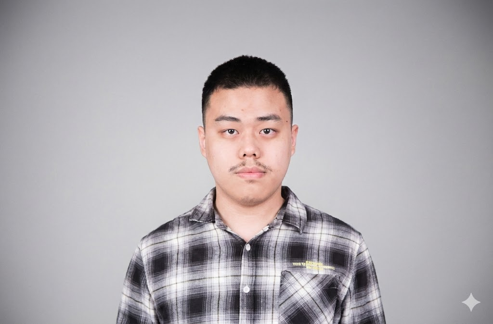

Continual Learning
& Recursive Self-Evolution
Developing intelligent agents that learn continuously and improve through recursive self-evolution, including medical agents.
PhD Student HKUST(GZ)
Robotics and Autonomous Systems

Developing intelligent agents that learn continuously and improve through recursive self-evolution, including medical agents.
Medical image segmentation and surgical video understanding.
Submitted to npj Digital Surgery Minor Revise
Medical Image Computing and Computer Assisted Intervention · MICCAI 2025
@inproceedings{WuKec_FSANet_MICCAI2025,
author = {Wu, Kecheng and Xing, Zhaohu and Cai, Zerong and Gao, Feng and Li, Wenxue and Zhu, Lei},
title = {{FSA-Net}: Fractal-driven Synergistic Anatomy-aware Network for Segmenting White Line of Toldt in Laparoscopic Images},
booktitle = {Medical Image Computing and Computer Assisted Intervention -- MICCAI 2025},
year = {2025},
publisher = {Springer Nature Switzerland},
series = {Lecture Notes in Computer Science},
volume = {15968},
pages = {289--299},
doi = {10.1007/978-3-032-05114-1_28}
}The Hong Kong University of Science and Technology (Guangzhou)
The Hong Kong University of Science and Technology (Guangzhou)
Sun Yat-sen University
Ke-Cheng Wu · HKUST(GZ)